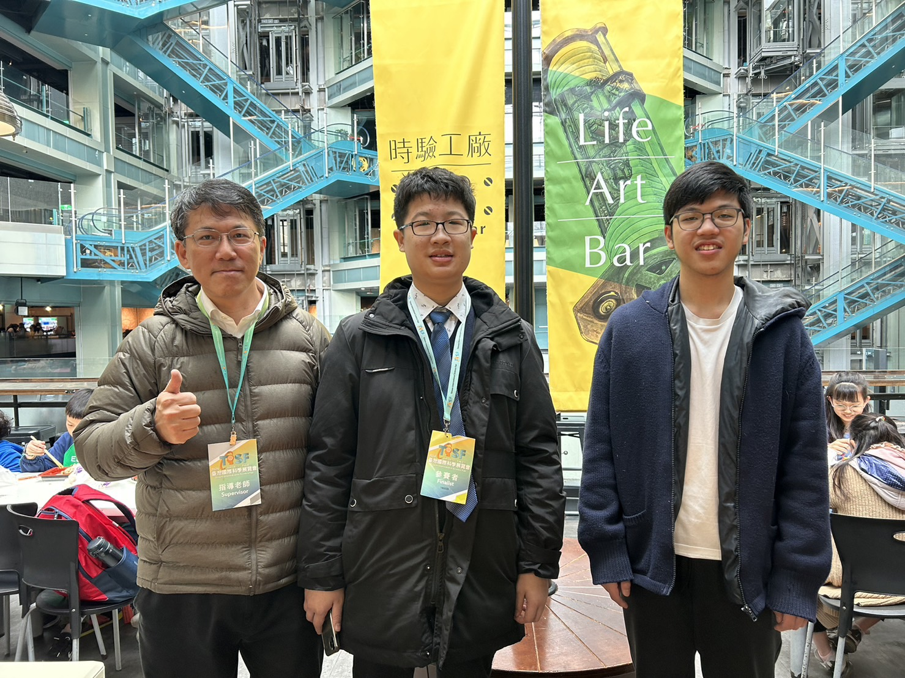
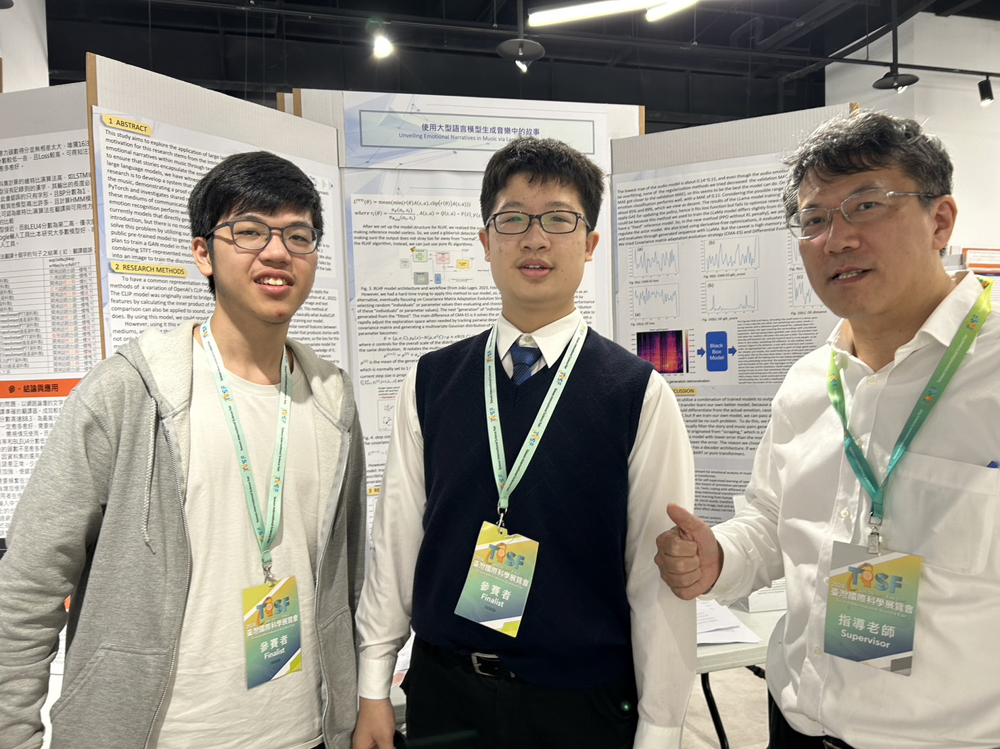
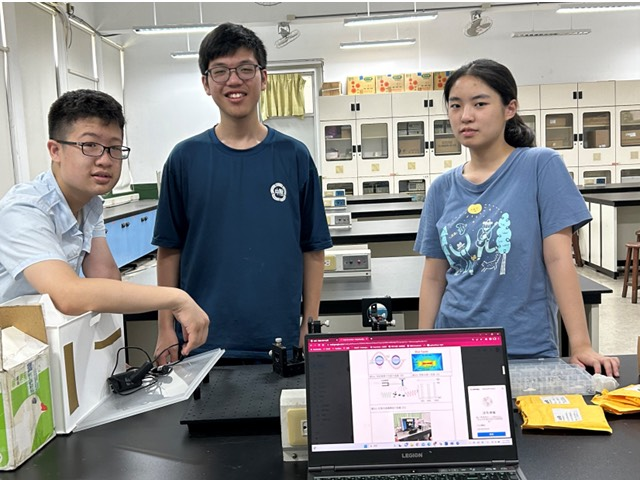
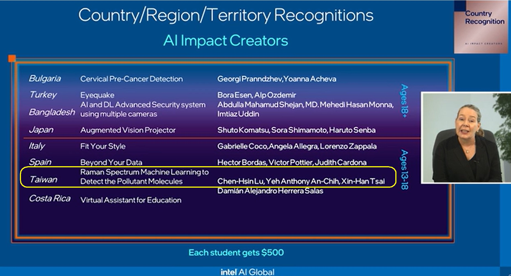
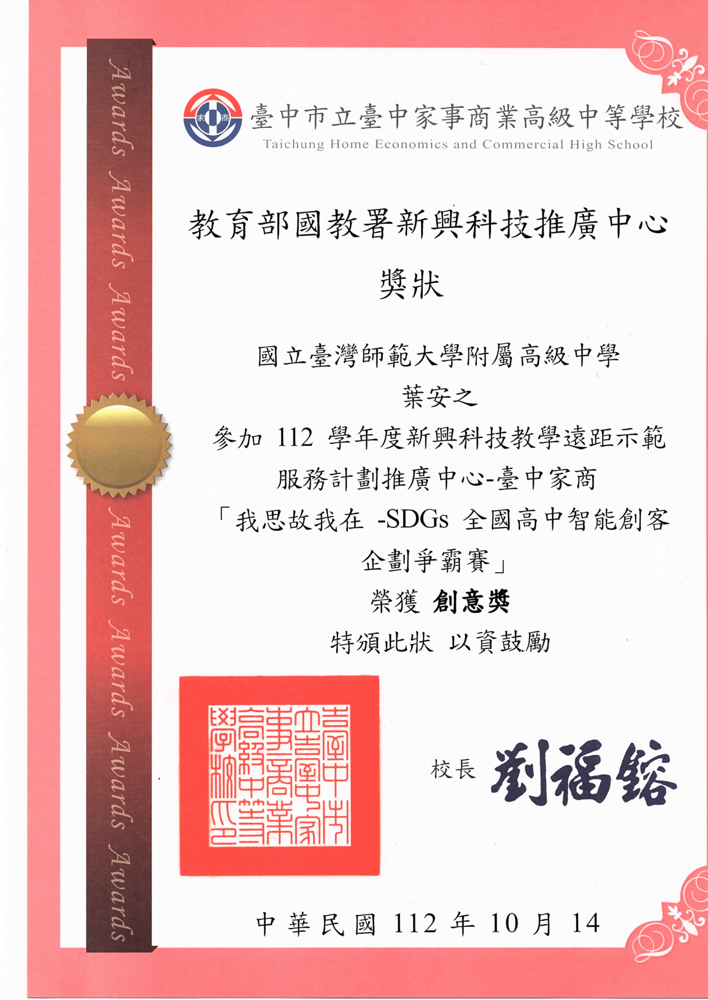
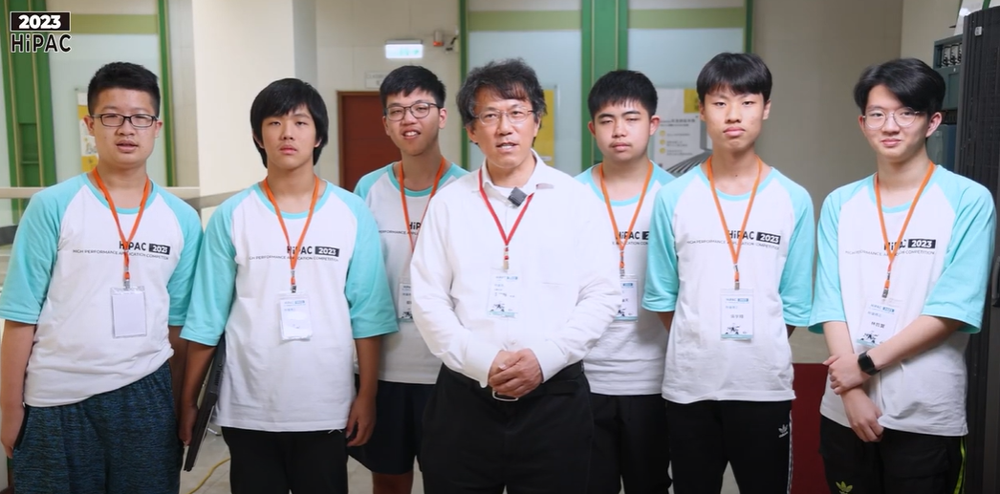

presentation ppt used
For this year's Global Impact AI festival, we designed a platform that enables users to have easy access to resources that allow them to acquire the needed skills for their most suitable jobs. Here is how it would be used: First, the user will take an aptitude test and find out the most suitable jobs for the user. The chatbot assistant on our platform will provide you with consultation service about jobs, such as the average salary, workplace environment, job market, etc. It will recommend the most suitable "courses" once you decide the job. The "courses" could be traditional videos or other LLMs using LoRAs and RAGs that can not only teach knowledge and skills, but also provide 24/7 consultation service on the topic. By developing this platform, we aim to provide people with quality education, reduce poverty, and provide people with decent work and the economy with economic growth.
certificate and poster used
We converted the "Music to Emotionally Similar Story" produced by the International Science Exhibition into emotionally similar music and stories, and we achieved the story to emotionally similar music by fine-tuning the T5 model to convert the story into emotionally similar music's description, and then converting that to music through Meta’s MusicGen model
Social Impact: By letting people suffering from ADHD and autism read stories with colorful pictures while listening to the music generated from these stories, it can act as a form of therapy for them.
 
This study aims to explore the application of large language models in generating stories from music. The motivation for this research stems from the intrinsic role of music in culture, but accurately expressing the emotional narratives within music through text is considered to be challenging. This study introduces an approach to ensure that stories encapsulate the emotional fluctuations present in the music. With the advancement of large language models, we have witnessed their applications in various creative domains. The objective of this research is to develop a system that takes music as input and produces stories sentimentally embedded within the music, demonstrating a proof of concept by combining multiple models. The study utilizes tools such as PyTorch and investigates shared representations of text and music as a means to achieve emotional alignment between these mediums of communication. The results of the research indicate that the models for music and text emotion recognition perform well, and a complete generation process has been developed. In short, there are currently models that directly generate music, and there are also models that integrate music into an introduction, but there is no model that generates stories based on the emotions in the music. Our research is to solve this problem by utilizing our models trained for music and text emotion recognition with the LLaMA 2 public pre-trained model to generate stories with emotional fluctuations similar to the target music. We also propose to train a GAN model that can directly transform music into emotionally homogeneous tales by combining STFT-represented music, vectorized text of the corresponding tale, and the vectorized topic of the tale into an image to train the discriminator and then the generator.
posters used in this competition
Social Impact: With this chain of models, we can empower deaf people by enabling them to experience music through reading the generated stories.

Taiwan's annual rice production of 1.4-1.5 million tons relies on clean water resources, but industrial development has increased water pollutants, endangering the environment. Detecting these pollutants is now an urgent global task. Our project proposes bionic structures using beetle wing templates to transfer PDMS (polydimethylsiloxane). Our innovative technology combines SERS analysis and CNN for pollutant R6G molecule detection with an impressive accuracy of 98-99%. Intel OpenVINO optimizes performance, achieving an 8-fold increase in inference speed without sacrificing accuracy. Our testing platform, Intel DevCloud, utilizes the high-performance Intel Xeon Gold 6128 CPU.
We aim to extend our technology beyond R6G detection for real-time water quality monitoring in Taiwan's rivers, aligning with SDG 6 (Clean Water and Sanitation) and SDG 9 (Industry, Innovation, and Infrastructure).
Social Impact: Our mission is to contribute to scientific research, ensuring the sustainability of Taiwan's water resources through cutting-edge, efficient, and accurate water quality analysis.
Social Impact: Our mission is to contribute to scientific research, ensuring the sustainability of Taiwan's water resources through cutting-edge, efficient, and accurate water quality analysis.

In this Competition, we trained a siamese model to identify potential diseases from x-ray chest scannings. Since the model we trained is a siamese model, we can easily fine-tune/transfer-learn it to identify other emerging new diseases.
repository
Social Impact: We hope to speed up the diagnosis process and lower the cost for existing and emerging diseases through this model.
repository
Social Impact: We hope to speed up the diagnosis process and lower the cost for existing and emerging diseases through this model.
 
In this competition, we took on the challenge of using and optimizing high-performance computing for Computational Fluid Dynamics(CFD), the ForecastNet model, and Nivida's HPC-Benchmarks. This was a really interesting experience because we never got into CFD before, so we basically had to learn everything from scratch. Despite this, we still managed to figure out the solutions to most of the questions, and won this award!

For this competition, there were three stages. In the first stage, we had to take a test on physics to prove we were at the top percentage.
For the next stage, we were given a random experiment (pancake rotation in our case) and we had to dicuss the factors that affected it and write a report on our experiment.
Finally, the last stage was physics debate, where we presented our experiments to other teams and we debated about the posible flaws and whose experiment discussed more factors etc.
PPT we used for presentation during final stage
PPT we used for presentation during final stage
In this competition, we trained a CNN model to identify potential diseases from x-ray chest scannings.
presentation of our project used in competition
Social Impact: We hope to speed up the diagnosis process for the trained diseases.
In this competition, we created a model that can capture and identify the vibration modes (caused by handwriting alphabet letters on table).
report
Social Impact: This model can be used for quickly identifying vibrations that could come from an earthquake and alert civillians.
We improved the previous (2022 National High School Emerging Technology - Smart Internet of Things Creative Application Competition) center-of-gravity distance sorting: use YOLO as the object in the image, and then use the GrabCut algorithm to distinguish the background and subject in the frame drawn by YOLO. Draw the subject first and then the background. This method allows the program to draw first Focus and draw objects one by one, more like how people draw.
paper
Social Impact: With this project, we plan to help both elders with dementia and children who are learning art.
Social Impact: With this project, we plan to help both elders with dementia and children who are learning art.